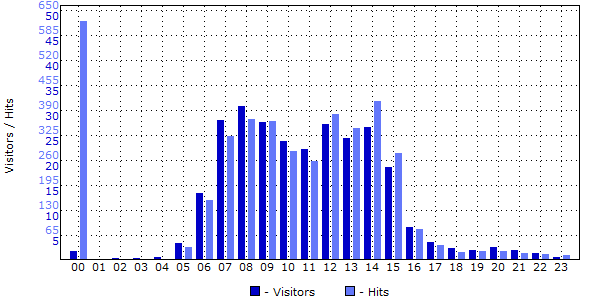

| Hour |
Hits |
Reloads |
Cached |
Incomplete
Requests |
Visitors |
Data transfer(MB) |
| 00:00 - 00:59 |
622.67 |
424.32 |
619.80 |
0.16 |
1.83 |
4.695 |
| 01:00 - 01:59 |
2.16 |
0.06 |
0.00 |
0.06 |
0.25 |
0.057 |
| 02:00 - 02:59 |
0.96 |
0.22 |
0.03 |
0.06 |
0.45 |
0.010 |
| 03:00 - 03:59 |
2.06 |
0.80 |
0.03 |
0.00 |
0.45 |
0.009 |
| 04:00 - 04:59 |
2.06 |
0.35 |
0.03 |
0.00 |
0.70 |
0.010 |
| 05:00 - 05:59 |
36.22 |
2.93 |
9.29 |
0.00 |
3.58 |
17.628 |
| 06:00 - 06:59 |
158.35 |
19.41 |
48.64 |
0.16 |
13.54 |
1.334 |
| 07:00 - 07:59 |
324.80 |
49.09 |
85.29 |
1.96 |
28.06 |
3.878 |
| 08:00 - 08:59 |
368.77 |
51.67 |
94.80 |
2.51 |
30.93 |
22.867 |
| 09:00 - 09:59 |
363.35 |
178.09 |
103.70 |
1.70 |
27.74 |
5.058 |
| 10:00 - 10:59 |
284.51 |
107.70 |
85.58 |
2.32 |
23.96 |
4.199 |
| 11:00 - 11:59 |
259.45 |
33.25 |
73.00 |
1.64 |
22.29 |
2.957 |
| 12:00 - 12:59 |
380.22 |
45.80 |
108.61 |
2.90 |
27.32 |
5.889 |
| 13:00 - 13:59 |
345.41 |
108.58 |
118.87 |
2.58 |
24.48 |
4.962 |
| 14:00 - 14:59 |
414.29 |
52.09 |
139.61 |
1.61 |
26.70 |
5.217 |
| 15:00 - 15:59 |
280.64 |
44.00 |
103.80 |
0.93 |
18.77 |
3.237 |
| 16:00 - 16:59 |
82.00 |
17.48 |
38.32 |
0.22 |
6.67 |
0.813 |
| 17:00 - 17:59 |
41.41 |
7.32 |
14.77 |
0.19 |
3.70 |
0.491 |
| 18:00 - 18:59 |
23.22 |
3.09 |
2.64 |
0.25 |
2.45 |
0.371 |
| 19:00 - 19:59 |
25.29 |
2.67 |
1.45 |
0.32 |
2.12 |
0.286 |
| 20:00 - 20:59 |
24.67 |
4.22 |
2.90 |
0.29 |
2.74 |
0.343 |
| 21:00 - 21:59 |
20.74 |
2.12 |
1.96 |
0.32 |
2.16 |
0.325 |
| 22:00 - 22:59 |
17.00 |
2.48 |
5.54 |
0.16 |
1.54 |
0.161 |
| 23:00 - 23:59 |
14.67 |
1.22 |
0.03 |
0.00 |
0.77 |
0.115 |
|
Description: This report shows the mean visitor activity during each hour of the day. The report will help you schedule technical support and determine the periods of time when updating website software and technical software will cause minimal disturbance.
|
|